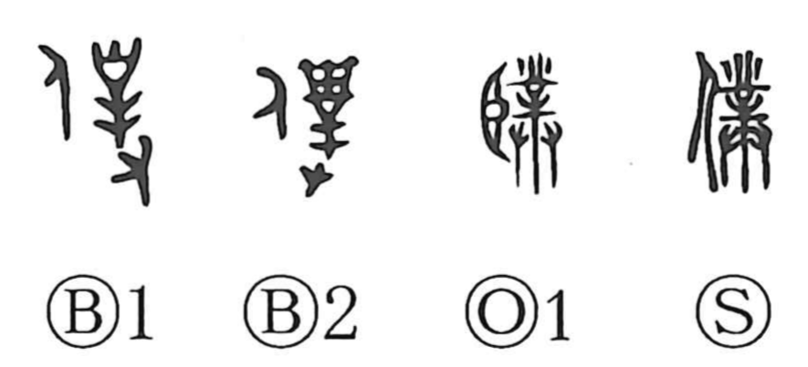

僕

Kun: shimobe, yatsugare | On: boku
servant ・ manservant ・ i (humble)
Explanation
A phono-semantic character, 僕 takes 業 as its phonetic, yielding the boku sound shared by characters such as 撲 and 樸. In bronze inscriptions it depicts a person wearing a ceremonial headpiece after a rite—an attendant serving the gods. An old-script form follows the pattern of 臣, which likewise originally showed one in service to the divine. From this origin the sense shifted to a general “servant,” specifically a “male servant,” and in time it became a humble first-person term; Sima Qian famously uses 僕 to refer to himself in his letter to Ren An.